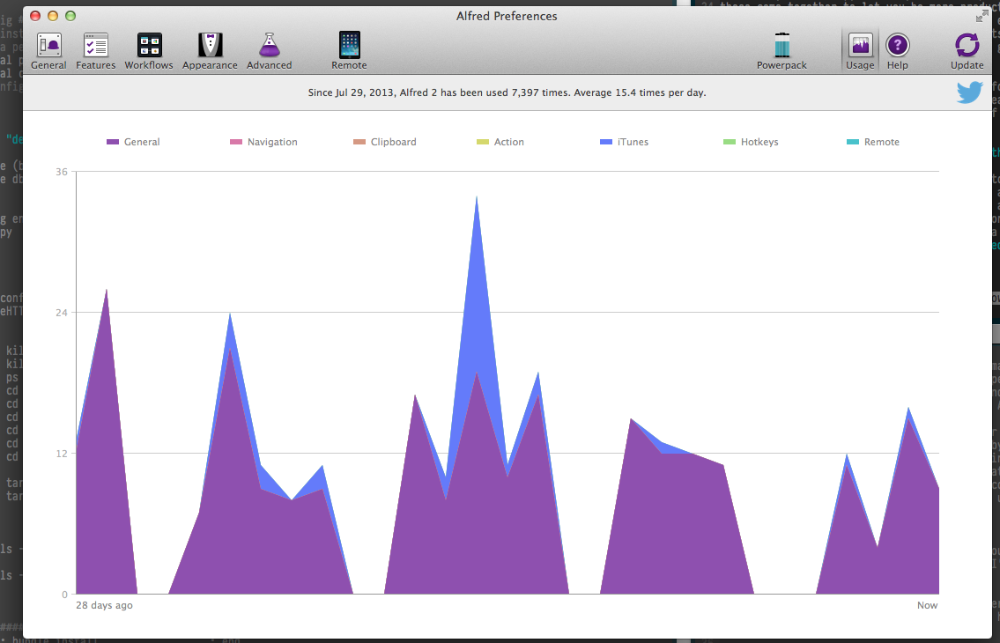
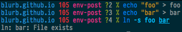
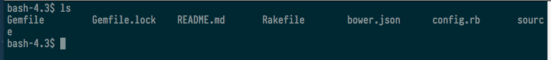
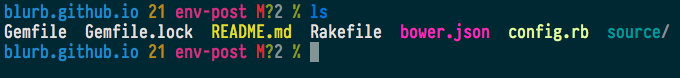
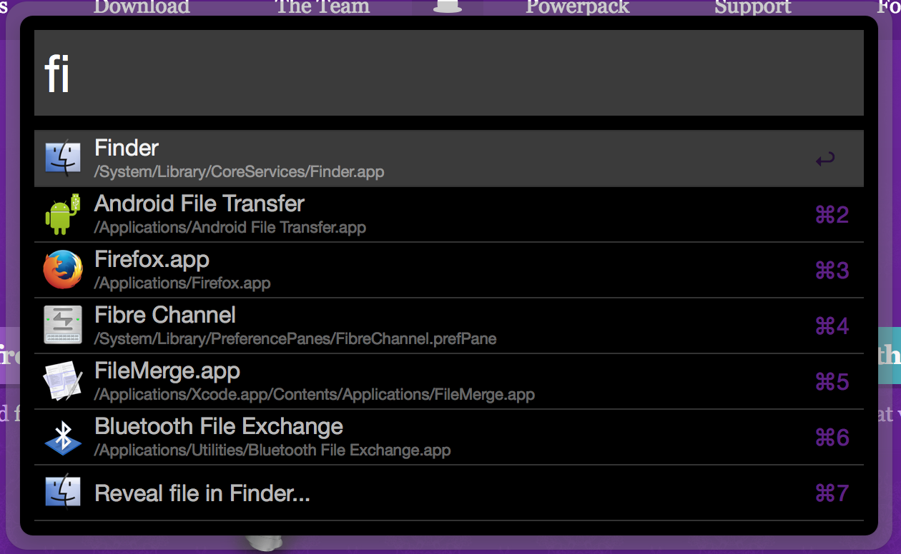
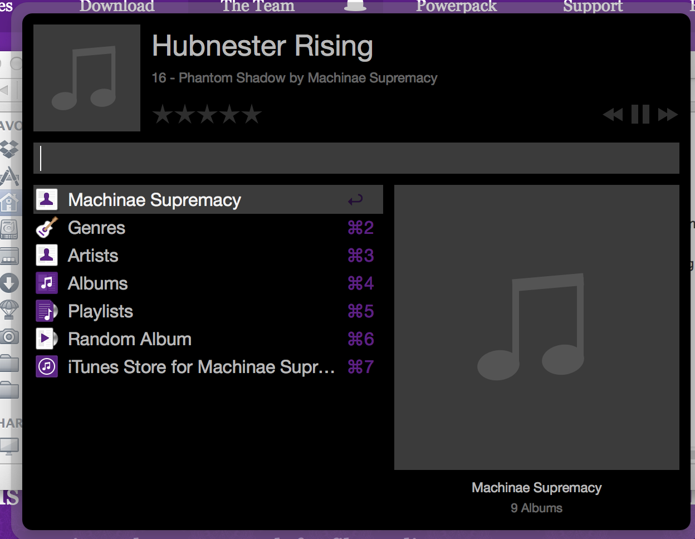

Environment Customizations
By Tim Herd ( @eqdw )
Environment Customizations
You're at your friend's house, chillin', maybe watching something on the TV, when suddenly you're hit with inspiration. "OH MY GOD, THAT'S THE PERFECT STARTUP IDEA!" you think. Visions of Sand Hill dance through your head as you envision the world changed by your brilliant new idea for a social network for crows, but there is one problem. You left your computer at home. You ask to borrow your buddy's machine, but you find it unusable. You sit there, staring blankly at a command line, filled with gibberish.
You turn to your friend. "Uhhhh…. how do I get an editor?" A flurry of random letters, and you're in vim. But something's wrong. DVORAK!
Has this ever happened to you? If so, you've fallen victim to someone else's over-customized environment! But don't despair. I'm here to show you some useful ones.
Why Customize? (or, Vanilla Bash Oughtta Be Good Enough For Everyone)
Three reasons: efficiency, comfort, and developer happiness. All three of these come together to let you be more productive. Having an environment that you're comfortable in, that empowers you to do things more easily, and that removes your pain points, will help you in the long run. A well-configured environment will give you two kinds of efficiencies:
The first kind of efficiency is the straightforward automation efficiency that engineers work all day to create for businesses. It's the kind of automation talked about in one of my favourite XKCDs:

You might think it is a waste of time to customize your tools. Maybe you think you're getting things done fast enough as it is. But you're probably blind to just how many times you do a given thing. Even if you shave 10 seconds a day off of your interactions with Git, how many times do you commit in a day? (hint: it should be a lot). Take, for example, my usage graph from Alfred (more on this later)

According to the XKCD graph, using Alfred 20 times a day, assuming the smallest possible time gain (1 second), entitles me to work on it for approximately 10 hours before I break even. Consider, then, that I've been carrying most of these customizations with me since college, and I've already shaved a full day off of executing programs that the rest of you are spending clicking through Finder.
However, the second kind of efficiency is the more important one. I'm sure that you've heard of "flow" before. Flow is the state of mind in which you're fully engaged on the task at hand, bringing to bear the full might of your impression mental faculties. Flow is the difference between killing an hour on r/roombaww waiting for 5PM, and missing your train because woah how'd it get to be 8PM, oh heck did I forget to eat dinner again? Flow is where you do your best work, and as an engineer, you should prioritize getting into it as much as possible, every day.
One of the biggest enemies of flow is interruption. Ask most engineers about this, and they're likely to tell you about all the ways in which Management interrupts them and wastes their time. But this is not the most common interruption. The most common interruptions are the small ones. The five- or ten-second cognitive delays you have to make in tricky situations when you drop out of autopilot and have to think "What's the syntax for ln again?". Seriously. Every single time I'm making a symlink I have to do the same thing:

And then, I cat both foo and bar just to make absolutely sure that they both contain "foo". "That's right. It's source then target. I'll never forget again. Until next week.
{kind=link}
By customizing your environment, you can remove as many of those potential future ln -s's out of your path right now. You can replace long, involved commands with shorter, more automatic keystrokes. You can make aliases for complex or often-error'd interactions. Each of these steps may on its own seem pointless, but the sum of all the individual optimizations is a more frictionless working environment.
Alright. Show Me What You Got
By now you should be sold on the virtues of making your environment your own. By the time you're done with it, it should be as comfortable as Homer Simpson's Butt Groove
But where should you start? Well, I started by borrowing from my friend's customizations, so in the interest of paying it forward, I'll share my l33t environment haxxz.
Unless otherwise stated, all of the following customizations are available at my Dotfiles repo on Github
The Command Prompt
I use a custom prompt generator for my prompt. This is primarily because implementing it in shell script was too slow. However, this has made it portable, and as I've moved from Bash to Zsh to Fish, this has been helpful.
My terminal is generated by a program called Wunderprompt, available on my Github.
This is an example of my prompt. There is a lot of information packed into this.
First, "source". This is the name of the current directory. It is colour coded based on which server I'm on. I currently have it set up as follows: Blue denotes my work machine. Yellow is my personal laptop. Magenta is the terminal on my website, and everything else defaults to Red. Ever accidentally run a command on prod? I won't; I can check the colour of the path.
The next section is git info. It begins with a nag counter. The red 2h means it has been 2 hours since my last commit. This starts as a green 0 and slowly counts up minutes. At 30 minutes it turns yellow. Two hours, red. Above two hours it stops displaying minutes and starts displaying the count in hours. And above 24 hours, in days. A friendly reminder to commit early and often.
Next, 'env-post', refers to the current branch. This will be * for master, and otherwise the branch name. In this case, I'm on the env-post branch of our blog repo. The branch name will be green for a clean branch, and magenta otherwise.
Speaking of branch cleanliness, env-post is magenta. The reason is the
next few characters. They give me an at-a-glance idea of the current
branch status. The D means a file was deleted. The A means a file was
added. The ? means there are unstaged changes. And the 7 counts the
total number of changes that a git status would return.
The last element of the prompt is the %. This tells me I'm not a superuser. If I was logged in as root, it would be a # instead. It's green. This means the last command was successful. If it was not, it would be red, and prefixed with the exit code from the failing command.
Shell Customizations
I use the Fish shell for my work. This is a shell with a much friendlier working environment. On the one hand, this means it's not encumbered by 30 years of UNIX baggage. On the other hand, it is not Bash compatible, so I often have to debug little issues with install scripts. In any case, I have a large number of shell modifications , which you can find in ` .config/fish/fish.config ` in my dotfiles repo. I'd like to highlight a few of my more common optimizations here
Near the top, I have a 'misc' section. It has some useful commands
function def Used as % def foo, this does a full text search of the current dir and
all subdirs for a ruby method definition of the passed in method (in
this case, 'foo'). Useful to find where some code is defined
function pyserv This creates a simple http server in the current
directory, serving up the files. It has its uses, if nothing else, as an
easy way to fileshare on a local network.
function psag This runs the process list and searches it for a
given string.
the 'u' functions "cd .." is a weird way to go up one level. "cd
../../../../../.." is a weird way to go uuuuuup six levels
tarx and tarc Tar, like ln, is lost arcana, known only to the last
remaining Level 27 Unix Masters. Well, until I wrote down the most
common way to create and extract tarballs
function ls I override ls with gnu ls and several custom flags.
Without this: 
With this: 
Bundler and rails section
Most of these commands are shortenings of normal usage. A few stand out
function bers and function berc Rails 2 invokves commands via script/foo. Rails 3+
use rails foo. This is my attempt to harmonize both.
function rRg Ever wanted to search for a specific route? Grep the
output of rake routes
function rlc and function rlv Will grep the server output for words
that indicate controllers and views respectively. Useful for tracking
down execution in unfamiliar code
Git section
There's a lot of writing on the internet about how the basic interface to git is mega confusing. I agree. That's why I made my own. Common operations get their own three (or sometimes four) -letter shortcuts. My normal workflow consists of the following:
gcom (git checkout master). gpum (git pull upstream master). gps
(git push (to my branch)). gcob WT-1234 (git checkout -b with the name
of whatever jira ticket). And so on and so on.
Finally, I have several local customizations for ssh'ing into work
machines (sorry, the details are secret). I don't type ssh
username@sillynamingconvention.12.23.32.232.blurb.com, I simply type
webteam. Takes me straight to our team's staging server.
Vim
I use Vim as my standard editor, along with Yehuda Katz' Janus framework. I don't use the majority of the extensions (I don't even know what they are!) but I'm slowly learning them. Most of them are commonsense things that I would go looking for anyway. Check it out for details!
Alfred
I mentioned above, I use a launcher program called Alfred to manage most of my gui workflows. At first glance, it looks like nothing more than a replacement for OSX's spotlight, but it is much, much more. I don't even use it to the full extent; I mainly use it for invoking programs, switching windows, and controlling my music. A simple tap on ⌘-space brings up the Alfred window, where I can type a few characters and it will intelligently fuzzy-match it to recently used commands.

I also use it to control my music. By typing 'it' I activate the itunes client, which lets me do a bunch of things, most with a single text command

Alfred comes with a visual scripting environment that lets you make all kinds of custom control scripts. Maybe some day I'll make some of them. For example, I've a friend who has Alfred scripts to control his Rails development environments. It's saved him oodles of time!
Chrome
What kind of web developer would I be if I didn't have Chrome customizations? I've only a few, and they're only useful in niches, but dang if this job doesn't have a ton of niches.
Advanced Rest Client
I often need to interact with and debug APIs, but Curl forever eludes me. So I got this instead. It's a pretty straightforward REST request manager. It lets you set headers with a convenient form, specify HTTP verbs, save requests for later. It's pretty useful
Edit This Cookie
Speaking of APIs, who hasn't had to debug cross-domain cookies that get shared between API calls. What's that, it's only me? :(
This is a very useful cookie inspector/editor that makes it a lot easier to debug those rare cookie-based bug
Page Ruler
Does what it says on the tin. Good for those pixel-perfect jobs
Visual Event
This extension gives you a button that, once clicked, will highlight every html element with events bound to it, and show you the javascript that will run on a given event trigger when you mouse over the highlights. This is super useful for JS heavy applications.
Search Shortcut Abuse
One final technique I've come across is abusing search shortcuts.
Nominally a search shortcut is just that: say I type "wikipedia" in the
url bar, that tells the browser to search wikipedia with whatever else
I type. But how does it do this? By crafting the correct query URL on
wikipedia. For instance, searching Google for "test" really just means
navigating to http://google.com/search?q=test. Using this lets me abuse
this functionality on other sites. For instance, I have every repo at
work set up to let me effortlessly search for a commit on github. If I
type <repo> <sha> it will expand to http://<internal
git>/therd/<repo>/commit/<sha>, showing me the commit I want. I've set
up a similar tool for Jira tickets.
Closing thoughts
You should customize your environment. Customizing your environment can speed up common tasks. It can encapsulate complexity into simple things that don't break your concentration. It can provide new functionality that you can make into a core part of your workflow.
If nothing else, it stops coworkers from borrowing your machine :D
Tim is a Software Engineer on the Web Team. He's spent entirely too much time customizing his development environments, and hiding cat pictures in the work he creates